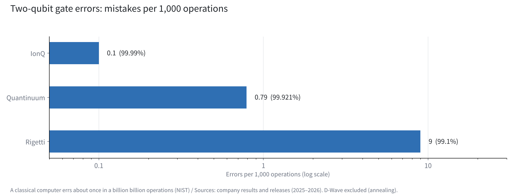
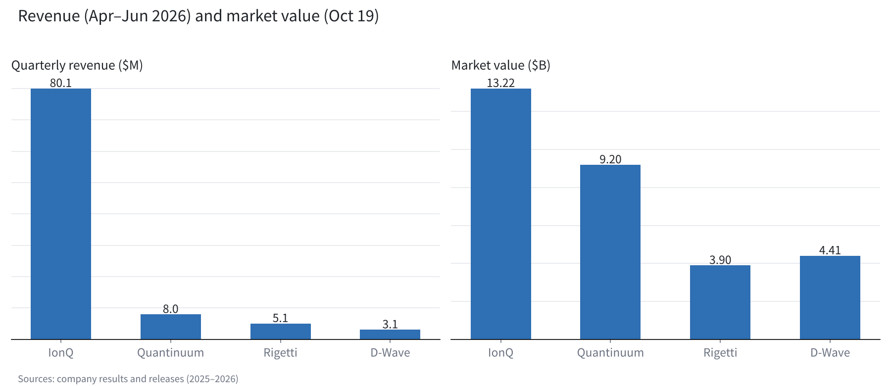

Four quantum computing companies, compared by approach and by the numbers
IonQ, Quantinuum, Rigetti and D-Wave. All four say "quantum," yet they build and earn in different ways.
Lining up error rates, revenue and cash shows where each company stands today.
I hold quantum stocks, and I sold IonQ and am waiting with a limit order. This is the material behind that decision.

What makes quantum computing hard
A classical computer calculates with bits that are 0 or 1. A quantum computer uses qubits that hold a superposition of 0 and 1, and it is expected to solve certain problems dramatically faster.
Qubits can also become "entangled" with other qubits. That property is why people expect gains in molecular simulation, code breaking and logistics optimization.
The hard part is that qubits are extremely fragile. Heat, vibration or a faint electromagnetic wave can break their state. The US National Institute of Standards and Technology (NIST) explains that today's qubits err roughly once in every 1,000 operations. A classical computer errs about once in a billion billion.
"Error correction" is what closes that gap. Many physical qubits are bundled and treated as a single "logical qubit." In 2024, Google showed with a method called the surface code that errors fall as more qubits are bundled (arXiv:2408.13687).
So the core of the race is low error rates and how qubits are bundled, more than qubit counts. I use that yardstick first when comparing the four companies.
Four approaches: ions, superconductors and annealing
IonQ and Quantinuum use the "trapped-ion" approach. Atomic ions are suspended by electric fields in a vacuum and controlled with lasers. Both use barium ions, and their strengths are flexible connections between qubits and low error rates. Their weaknesses are operating speed and scaling the hardware.
Rigetti uses the "superconducting" approach, turning circuits cooled to extreme cold into qubits. It can borrow semiconductor manufacturing, so chips come quickly, though errors run higher. It scales by linking small chips called "chiplets."
D-Wave has long worked on "annealing," a dedicated design suited to optimization problems, and runs Advantage2 with more than 4,500 qubits. In 2026 it bought a gate-model company for about $550 million and stepped into general-purpose machines as well.

Comparing error rates
I lined up two-qubit gate accuracy (fidelity) from each company's announcements. IonQ reached above 99.99% on a prototype (October 2025), Quantinuum's Helios 99.921%, and Rigetti's Cepheus-1-108Q a median of 99.1%.
Converted to errors per 1,000 operations, IonQ makes about 0.1, Quantinuum about 0.8 and Rigetti about 9. The two trapped-ion companies make about ten times fewer errors than the superconducting one.
Quantinuum says it ran 48 logical qubits on the 98-qubit Helios, with logical fidelity reaching 99.9995%. In demonstrating error correction, I see it in the lead for now.
D-Wave's annealing cannot be measured with the same yardstick as gate-model machines, so I left it out of the chart.

How they earn, and the cash they hold
In April–June 2026, IonQ's revenue was $80.1 million (up 287% year on year), far ahead of the other three. Quantinuum posted $8.0 million, Rigetti $5.1 million and D-Wave $3.1 million.
IonQ's net loss was large at $1.868 billion, but it holds about $3 billion in cash. On October 14 it priced a $2 billion offering at $40 a share, adding seven-year warrants for 100 million shares at an exercise price of $69.46.
Rigetti holds $541 million in cash with no debt, and has a letter of intent for up to $100 million in support from the US Commerce Department. Quantinuum listed in June 2026 at $60 a share, and Honeywell holds about 49.1% of the voting rights.
Market values on October 19 were $13.22 billion for IonQ, $9.2 billion for Quantinuum, $4.41 billion for D-Wave and $3.9 billion for Rigetti. The gap in market value is far narrower than the gap in revenue. The market is pricing approach and future path more than current sales.

The four companies on one table
Here are the numbers so far, side by side.
| Company | Approach | Main system | 2-qubit fidelity | Apr–Jun revenue | Market value (Oct 19) | DARPA QBI |
|---|---|---|---|---|---|---|
| IonQ | Trapped ion | Tempo / Superion 256 (2027) | Above 99.99% (prototype) | $80.1M | $13.22B | Stage C |
| Quantinuum | Trapped ion | Helios (98 qubits) | 99.921% | $8.0M | $9.2B | Stage B |
| Rigetti | Superconducting | Cepheus-1-108Q | 99.1% (median) | $5.1M | $3.9B | ― |
| D-Wave | Annealing + gate model | Advantage2 (4,500+ qubits) | ― | $3.1M | $4.41B | ― |
Seen as a table, the two trapped-ion firms lead on low errors, IonQ on revenue, Rigetti on a debt-free balance sheet, and D-Wave on scale available today. No single company wins on every line.
The government's view: DARPA's final stage
The US Defense Advanced Research Projects Agency (DARPA) runs a program (QBI) to identify quantum computers that can become useful. On October 8, four companies including IonQ advanced to the final Stage C, with support of up to $300 million expected.
Quantinuum remained at Stage B. The company leading on technical numbers did not advance in the government's selection. Perhaps low error rates are not the whole test, and the path to scaling is being judged too.
Paths to commercialization
IonQ targets 10,000 physical qubits in 2027 and 2 million physical qubits, or 40,000 to 80,000 logical, by 2030. The 256-qubit Superion is due for delivery in 2027. It is also buying Elisity for up to $1.3 billion in stock, extending into security that includes post-quantum cryptography.
Quantinuum has laid out generations: Sol in 2027 and Apollo in 2029. Rigetti adds qubits through chiplets, while D-Wave keeps optimization customers on annealing and pushes gate-model development.
For all four, much of today's revenue still comes from research institutions and government contracts. It will take time before these become tools that anyone uses.
How I see it
In quantum, I hold 1,000 shares each of Rigetti and D-Wave. On October 13, I sold all 2,500 of my IonQ shares, and for half, 1,250 shares, I am waiting with a limit order at $28.50.
I chose IonQ for its trapped-ion approach and its relationship with DARPA. Today's comparison let me check both as numbers: error rates about ten times lower, and a place in DARPA's final stage.
At the same time, I see the latest offering as unfavorable to existing shareholders. So I keep my premise and wait for the price. The leader in approach and the leader in share price are not necessarily the same company.
When I look at a quantum company, I check the numbers in three steps. First, error rates. Second, how many years of research its cash can fund. Third, whether contracts with governments and large companies keep coming. I look at the share price after that.
Quantum is still moving from research to commercialization. As long as the numbers do not betray my premise, I will keep holding companies with different approaches, spread across them a little at a time.
Sources
- NIST, "Quantum Computing Explained" https://www.nist.gov/quantum-information-science/quantum-computing-explained
- Google Quantum AI, arXiv:2408.13687 https://arxiv.org/abs/2408.13687v1
- IonQ Q2 2026 results https://www.ionq.com/news/ionq-announces-record-second-quarter-2026-revenues-growing-287-yoy
- IonQ $2 billion offering https://investors.ionq.com/news/news-details/2026/IonQ-Announces-Pricing-of-2-0-Billion-Equity-Offering/default.aspx
- IonQ roadmap https://www.ionq.com/blog/ionqs-accelerated-roadmap-turning-quantum-ambition-into-reality
- Quantinuum Helios https://quantinuum.com/blog/introducing-helios-the-most-accurate-quantum-computer-in-the-world
- Quantinuum Q2 2026 results https://www.quantinuum.com/press-releases/quantinuum-reports-second-quarter-2026-results
- Rigetti Q2 2026 results https://investors.rigetti.com/news-releases/news-release-details/rigetti-computing-reports-second-quarter-2026-financial-results
- D-Wave Q2 2026 results https://www.dwavequantum.com/company/newsroom/press-release/d-wave-reports-second-quarter-2026-results/
- DARPA QBI Stage C https://www.govconwire.com/articles/darpa-quantum-benchmarking-initiative-stage-c
Photos: Planet Volumes / Laura Ockel (Unsplash). Charts by YUKI CAPITAL
I record my daily numbers and decisions on X.